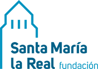

Antes de que te conozcan por tu proyecto, te conocen a ti. Tu marca personal es la imagen y la confianza que generas, y se puede construir de forma consciente, sin postureo y sin necesidad de ser influencer.
Es lo que otras personas piensan y dicen de ti cuando no estás delante: tu reputación, tus valores y lo que se espera de ti. Todas las personas tenemos marca personal, la trabajemos o no.
Para quien emprende es clave: en las primeras etapas, los clientes, colaboradores y entidades confían en la persona antes que en un producto todavía desconocido.
No se trata de parecer quien no eres, sino de comunicar con claridad quién eres y qué aportas.
Idea clave para recordarTus valores, fortalezas y forma de trabajar.
¿Qué me define y qué me importa?El problema que resuelves y para quién.
¿Por qué me elegirían a mí?Los canales donde te muestras: redes, web, eventos.
¿Dónde está mi público?Lo que dices, lo que haces y cómo lo cuentas coinciden.
¿Me reconocerían en todos sitios?Anota tus valores, fortalezas y a quién quieres llegar.
Escribe tu frase de marca y actualiza tus perfiles con ella.
Publica contenido útil con regularidad: lo que aprendes y lo que haces.
Pide feedback, mira qué conecta y corrige lo que no funcione.
Búscate en Google en una ventana de incógnito y anota qué aparece. Después, pide a tres personas que describan tu perfil profesional en tres palabras y compáralo con tu frase de marca.